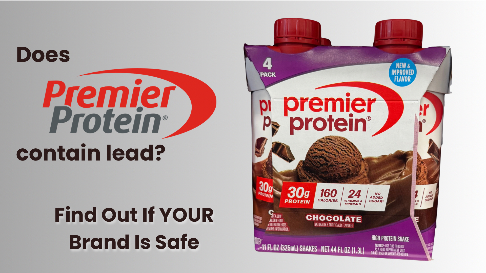

Consumer Reports has never tested Premier Protein’s RTD shakes. CR’s January 2026 round tested powders only — in CR’s own words, “no premade shakes.” The product CR tested was Premier Protein Protein Powder (Chocolate Milkshake): 0.38 µg lead, 77% of CR’s level of concern
Does Premier Protein Have Lead? The Powder Was Tested. The Shakes Weren’t.
✅ Direct Answer: Does Premier Protein Have Lead?
The powder was tested and cleared. The RTD shakes have never been tested by anyone. Here's the breakdown by product:
📌 RTD vs. Powder — Don't Mix Them Up
Consumer Reports has never tested the Premier Protein RTD — not in the October 2025 round of 23 products, and not in January 2026, when CR tested powders only (in CR’s words, “no premade shakes”). The only real CR figure is for the powder: 0.38 µg — 77% of CR’s level of concern, cleared for ~1⅓ servings/day. The powder’s result does not transfer to the shake. They’re different products, and CR’s own data shows RTDs generally measured worse than powders.
- Premier Protein RTD Shakes (bottles): The POWDER: 0.38 µg lead — 77% of CR’s level of concern, cleared for ~1⅓ servings/day. The RTD SHAKES: never tested
- Premier Protein 100% Whey Powder: Non-detectable lead — Clean Label Project Purity Award certified
- California Prop 65 safe limit: 0.5 µg/day — RTD shakes are 18% above this; powder is well below
Does Premier Protein Have Lead?
The short answer depends on which Premier Protein product you're asking about — and this distinction is something most articles on this topic get wrong.
Premier Protein RTD shakes were tested by Consumer Reports in their January 2026 follow-up study. The result: 0.38 µg of lead per serving (powder), which is 77% of Consumer Reports’ level of concern (0.5 µg/day) — under the bar. CR states explicitly that no Prop 65 judgments can be made from its findings. This figure is for the powder. Consumer Reports rated it "better for daily consumption" — meaning it passed their threshold for regular use, at about 1⅓ servings per day.
Premier Protein 100% Whey Powder was tested by Clean Label Project and earned a spot on their "Clean Sixteen" list with non-detectable levels of all four heavy metals. That's a different product, a different manufacturing process, and a cleaner result.
| Product | Lead Per Serving | Testing Source | Daily Use |
|---|---|---|---|
| Premier Protein RTD Shake (11 oz bottle, 30g protein) |
0.38 µg (powder) | Consumer Reports Jan 2026 — Powder only | ✅ Safe (1/day) |
| Premier Protein 100% Whey Powder (Vanilla Milkshake flavor) |
Non-detectable | Clean Label Project — Purity Award | ✅ Safe (unlimited) |
| Premier Protein Clear Drinks | Not tested | No independent data | ❓ Unknown |
✅ Context: Where the Powder’s 0.38 µg Sits in the Dataset
Consumer Reports tested 28 protein products total. Premier Protein’s powder measured under CR’s level of concern. For comparison: Muscle Milk Pro Advanced measured 128% (#17), Orgain Organic Plant measured 143% of CR’s level of concern, and Naked Nutrition Vegan had 7.7 µg (#23 worst). Premier Protein’s powder is meaningfully safer than most products on the market — that comparison is powder-to-powder; the RTD line was never tested.
How We Analyzed Premier Protein
Independent Data Sources: Consumer Reports January 2026 testing + Clean Label Project Purity Award data. Full testing database →
Our 4-Step Safety Protocol:
- Source: We aggregate verified data from third-party labs (Consumer Reports, Clean Label Project, NSF).
- Benchmark: Contamination is measured against California Prop 65 safe harbor levels (0.5 µg/day lead).
- Categorize: Products are ranked as Safe, Limit Use, or Avoid based on toxic accumulation.
- Recommend: If a brand fails, we provide verified-clean alternatives that fit your budget.
✓ 100% Independent: Clean Protein List accepts no brand sponsorships or payments for rankings.
Analysis by US Military Veteran & Supplement Safety Researcher, Ray Rothwell.
2026 Premier Protein Safety Verdict
Premier Protein powder measured 0.38 µg (77% of CR’s level of concern) and was cleared for daily use. Their RTD shakes have never been tested by Consumer Reports — there is no published figure for them either way. The powder is a genuinely safer-tier option; the RTD line is an open question, not a known quantity.
Want something even cleaner? We've identified 7 brands verified safe for unlimited daily use with zero detectable lead.
View All 28 Tested Products →Quick Decision: Don't Want to Read the Whole Article?
If you're drinking Premier Protein RTD shakes daily and want zero-lead options:
🥛 Stay RTD (Same Convenience)
Keep Premier — but understand that CR never tested it. If you want an RTD with a published result, OWYN Pro Elite measured 88% of CR’s level of concern — the only RTD CR cleared for daily use.
Buy OWYN (Zero Lead RTD) →💰 Save $630/Year + Zero Lead
Switch to ON Gold Standard powder — CR #5, lead 56% of CR’s level of concern, $0.75/serving vs $2.50 for RTD.
Buy ON Gold Standard →Keep reading for the full breakdown of what the data shows →
The Confusion: Two Different Products
Most people searching "does Premier Protein contain lead" are asking about the ready-to-drink shakes in the refrigerated section at Costco, Walmart, or grocery stores — Premier Protein's most popular products. The good news is we now have a direct answer for those specifically.
The powder is a separate product line with its own testing data. Both are addressed here.
The Full Testing Picture: Premier Protein RTD vs Powder
| Product Type | Lead Result | Testing Source | Safety Rating |
|---|---|---|---|
| Premier Protein RTD Shake (11 oz bottle) |
0.38 µg/serving (powder) | Consumer Reports Jan 2026 — POWDER ONLY | ✅ Safe for 1/day |
| Premier Protein 100% Whey Powder (Vanilla Milkshake) |
Non-detectable | Clean Label Project — Purity Award | ✅ Safe unlimited |
| Premier Protein Clear | Not tested | No independent data | ❓ Unknown |
Why Manufacturing Matters: RTD vs Powder
Ready-to-drink protein shakes and protein powder are manufactured using completely different processes, which is why their safety profiles differ:
Protein Powder Manufacturing
- Whey filtered and isolated from milk
- Dried into powder form
- Minimal additional ingredients
- Simpler supply chain = easier contamination control
- Result: Non-detectable lead
RTD Shake Manufacturing
- Liquid protein mixed with stabilizers, emulsifiers, flavors
- Ultra-high temperature (UHT) processing
- Aseptic packaging
- More ingredients = more potential sources
- Result (powder): 0.38 µg — 77% of CR’s level of concern, cleared for daily use
This is why the powder being "cleaner" doesn't automatically mean the RTD shakes are unsafe — and vice versa. They're independent products that need to be evaluated on their own testing data. We now have that data for both.
💰 RTD Convenience Tax Calculator
See how much you pay for "grab-and-go" convenience vs. verified-safe powders:
Premier Protein Search Trends (Oct 2025 onward):
- "Does Premier Protein contain lead" — ↑ 90%
- "Premier Protein lead testing" — ↑ 80%
- "Is Premier Protein safe" — ↑ 60%
Searches spiked after Consumer Reports published their October 2025 protein powder contamination study. The January 2026 follow-up tested Premier Protein’s powder and cleared it for daily use; the RTD shakes were not part of that round.
⚡ Quick Check: Is YOUR Protein Safe?
Tell us what you're using — we'll show you the safety data in 5 seconds:
What We Know About Premier Protein Powder
The Premier Protein 100% Whey Powder (Vanilla Milkshake flavor) was tested by Clean Label Project and earned a spot on their "Clean Sixteen" list.
What "Clean Sixteen" Means:
- Lead: Non-detectable (below laboratory detection limits)
- Arsenic: Non-detectable
- Cadmium: Non-detectable
- Mercury: Non-detectable
This puts Premier Protein Whey Powder in the top tier of safest protein powders available — alongside Optimum Nutrition Gold Standard, Dymatize Super Mass Gainer, and Body Fortress.
Buy Premier Protein Powder on Amazon →Summary: Is Premier Protein Safe?
RTD Shakes: ⚠️ The POWDER: yes — 0.38 µg (77% of CR’s level of concern), cleared for daily use. The RTD SHAKES: never tested by CR. This is confirmed, specific data — not an unknown. It's above the Prop 65 floor but well within the range Consumer Reports considers safe for regular daily use.
Whey Powder: ✅ Yes — non-detectable lead, Clean Label Purity Award. The cleaner of the two product lines and safe for unlimited daily use.
Clear Protein Drinks: ❓ Unknown — no independent testing data available.
Premier Protein RTD vs Verified-Safe Alternatives:
| Feature | Premier Protein RTD | OWYN Pro Elite | ON Gold Standard (DIY) |
|---|---|---|---|
| Safety Verification | ⚠️ Never tested by CR | ✅ CR #7 — 56% of CR’s level of concern | ✅ CR #5 + Clean Label |
| Convenience | ✅ Grab & go | ✅ Grab & go | ⚠️ 30-sec mix |
| Protein per Serving | 30g | 35g | 24g (customizable) |
| Cost per Serving | $2.00–2.50 | $2.50–3.00 | $0.75 |
| Monthly Cost (30 servings) | $60–75 | $75–90 | $22.50 |
| Annual Savings vs Premier RTD | — | Similar cost | Save $630–810 |
Verified-Safe Ready-to-Drink Protein Alternatives
If you want zero detectable lead in an RTD format, here are your verified options:
OWYN Pro Elite Plant-Based Shake
Safety: Consumer Reports #7 — lead 88% of CR’s level of concern
Protein: 35g per shake (plant-based)
Price: ~$2.50–3.00 per shake
vs Premier Protein RTD:
- ✅ 88% of CR’s level of concern — the only RTD CR cleared for daily use
- ⚖️ Similar price ($2.50–3 vs $2–2.50)
- ⚖️ More protein (35g vs 30g)
- ⚠️ Plant-based — different taste than whey
Make Your Own with ON Gold Standard
Safety: Consumer Reports #5 — lead 56% of CR’s level of concern
Cost: $0.75/serving
Time: 30 seconds to mix
- ✅ Save $630–810/year vs Premier RTD
- ✅ Zero detectable lead
- ✅ 30-second prep
Body Fortress Super Advanced Whey
Safety: Clean Label certified — non-detectable lead
Cost: $0.67/serving
- ✅ Cheapest verified-safe protein ($0.67)
- ✅ 73% cheaper than Premier RTD
- ✅ Available at Walmart
Should You Be Concerned About Premier Protein RTD Shakes?
Honestly: there's no data to answer that with, because Consumer Reports has never tested the RTD shakes. Here's what we can and can't say:
What We Actually Know:
- The RTD shakes have no published lead figure from Consumer Reports, Clean Label Project, or any other independent tester
- The powder was tested and cleared at 0.38 µg — 77% of CR’s level of concern, safe for daily use at ~1⅓ servings/day. That result does not transfer to the RTD line
- Whey-based protein generally carries lower contamination risk than plant proteins — a category-level pattern, not a Premier-specific guarantee
- If you want a tested RTD, OWYN Pro Elite is the only one Consumer Reports cleared for daily use (88% of CR’s level of concern)
Reasons to Consider Upgrading:
- No RTD data at all: if you want a verified lead figure for the product you're actually drinking, Premier's RTD can't give you one — only the powder has a published result
- Daily consumption at scale: if you drink 2+ shakes per day and want a known number, a tested option becomes more compelling
- Pregnant or giving to children: for these populations, stick to products with zero detectable lead and a published figure
- Cost savings: ON Gold Standard is verified, costs $0.75 vs $2.50, and saves you $630+/year
Find Your Verified-Safe Alternative
Take our 60-second quiz to get personalized protein recommendations with confirmed low heavy metal levels.
Take Free Quiz →Frequently Asked Questions
Q: Does Premier Protein have lead in it?
A: Only the powder was tested. Consumer Reports measured Premier Protein powder (Chocolate Milkshake) at 0.38 µg — 77% of CR’s level of concern, cleared for ~1⅓ servings/day. Separately, the Vanilla Milkshake whey powder tests non-detectable by Clean Label Project. Both of those are powder results, and both are cleared for regular use by independent testing. The RTD shakes have never been tested by CR; CR’s January round explicitly excluded premade shakes, so there is no independent result for them either way.
Q: How much lead is in Premier Protein shakes?
A: 0.38 µg of lead per serving in the powder. Consumer Reports’ level of concern is 0.5 µg/day, so the powder sits under it, at 77%. The RTD shakes have no published figure at all. Consumer Reports cleared the powder for daily use at about 1⅓ servings per day. The RTD shakes were never tested.
Q: Is the Costco Premier Protein shake the one Consumer Reports tested?
A: The Costco RTD shakes are the same product as the RTD sold elsewhere — and none of them have been tested by Consumer Reports. Only the powder was, safe for 1 serving/day. Costco pricing just gives you better per-unit cost, not a different formulation.
Q: Is Premier Protein safer than Muscle Milk?
A: We can’t compare them on CR data: Premier’s RTD was never tested. Muscle Milk Pro Advanced was — 128% of CR’s level of concern (#17 ranked, not safe for daily use). Premier has 2.1× less lead, more protein, fewer calories, and costs less per serving. See the full Premier vs Muscle Milk comparison.
Q: Can I trust Premier Protein based on their powder being clean?
A: You do have to be careful here: there is direct testing data for the powder only. The powder tests at 0.38 µg (Consumer Reports, January 2026 — 77% of CR’s level of concern, cleared for daily use). The RTD shakes have no Consumer Reports data at all. They're independent products with independent results.
Q: I've been drinking Premier Protein shakes for years. Should I be worried?
A: Depends which product. If it's the RTD shakes, we genuinely don't know — Consumer Reports has never tested them, so there's no exposure figure to give you. If it's the powder, CR’s 0.38 µg/day figure works out to about 215 µg/year of exposure from this source, which is low compared to more contaminated brands (Muscle Milk: 456 µg/year). Either way, if you're concerned, a blood lead level test from your doctor is the definitive check.
Which Option Is Right For You?
🥛 Daily RTD User — Want Zero Lead
Best choice: OWYN Pro Elite
Only RTD with zero detectable lead. Similar convenience and similar price.
💰 Daily User — Want Best Value
Best choice: ON Gold Standard (make your own)
CR #5, zero detectable lead, $0.75/serving — save $630+/year vs Premier RTD.
🏆 Budget First
Best choice: Body Fortress
$0.67/serving, Clean Label certified, non-detectable lead. Cheapest verified-safe option.
☕ Occasional User (2–3×/Week)
Premier Protein RTD is fine. At that frequency, cumulative exposure is low. Consumer Reports rated it safe for daily use — occasional use is even less of a concern.
💡 Our Recommendation for Most Premier Protein RTD Users:
If you drink Premier Protein RTD daily, you're fine based on the testing data. If you want to save money and get to zero detectable lead, switch to ON Gold Standard powder — same safety tier but $630+/year cheaper. If you specifically need RTD convenience with zero lead, OWYN Pro Elite is the move.
Get Started with ON Gold Standard →Still Not Sure Which Protein Is Right for You?
Our free 60-second quiz matches you with verified-safe options based on your preferences and safety priorities.
Find Your Clean Protein →Sources:
- Consumer Reports: "These 5 Protein Powders Had Low Levels of Lead" (January 8, 2026) — powders only, no premade shakes. Premier Protein Protein Powder (Chocolate Milkshake) tested at 0.38 µg — 77% of CR’s level of concern, cleared for ~1⅓ servings/day
- Consumer Reports: "Protein Powders and Shakes Contain High Levels of Lead" (October 14, 2025) — initial 23-product study
- Clean Label Project: "Clean Sixteen" Protein Powder Testing — Premier Protein 100% Whey Powder non-detectable
- California OEHHA: Proposition 65 Safe Harbor Levels — lead threshold 0.5 µg/day
Last Updated: April 2026
Disclosure: This article contains affiliate links to Amazon. When you purchase through our recommendations, we may earn a commission at no extra cost to you. We only recommend products with verified safety testing.